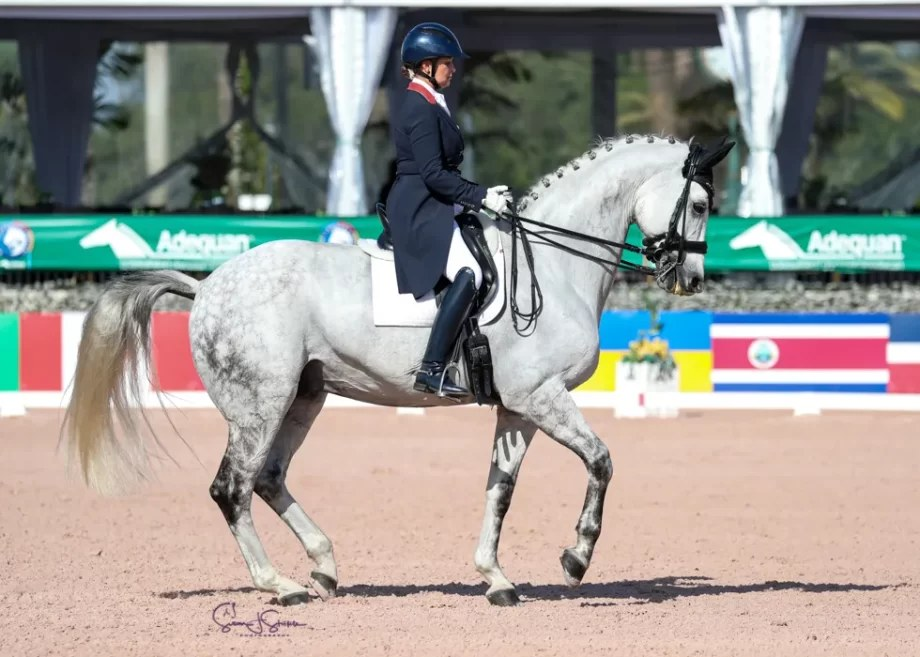

Kristina Harrison-Antell conquista el Gran Premio del CDI3* de Sherwood con Finley

La jinete estadounidense y el veterano Finley se impusieron en el Ginny Rattner Memorial Dressage del CDI3* de Sherwood con una nota de 68,957 %, su primera competición fuera de California en más de tres años.

Kristina Harrison-Antell, de Los Ángeles, conquistó el Gran Premio del CDI3* de Sherwood junto al semental Finley de dieciséis años tras firmar una nota de 68,957 %. El binomio, que no competía fuera de su estado californiano desde hace más de tres temporadas, dominó la prueba Ginny Rattner Memorial Dressage con solvencia ante un podio de gran nivel técnico.
La canadiense Erin Silo quedó a apenas 0,196 puntos porcentuales con Jett, un castrado KWPN de doce años con el que logró una marca personal de 68,761 %. La pareja debutó en Gran Premio hace cuatro meses, consolidando su progresión con este segundo puesto. Completó el podio la también estadounidense Cyndi Jackson con Florisson, que sumó 66,804 %.
El castrado Finley, criado en Holanda, regresa así a la competición internacional tras una larga etapa centrada en el circuito californiano, demostrando que su nivel se mantiene intacto a pesar de su edad. Harrison-Antell y el veterano semental confirmaron su entendimiento en una reprise sólida que les valió el triunfo en una jornada marcada por la igualdad en cabeza de la clasificación.
— Redacción de Hípica al Día